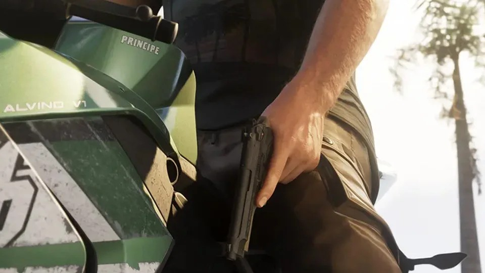
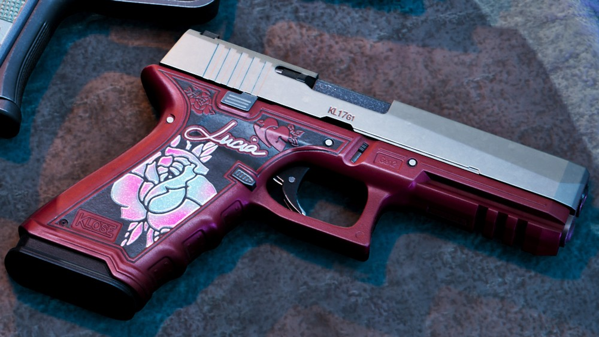
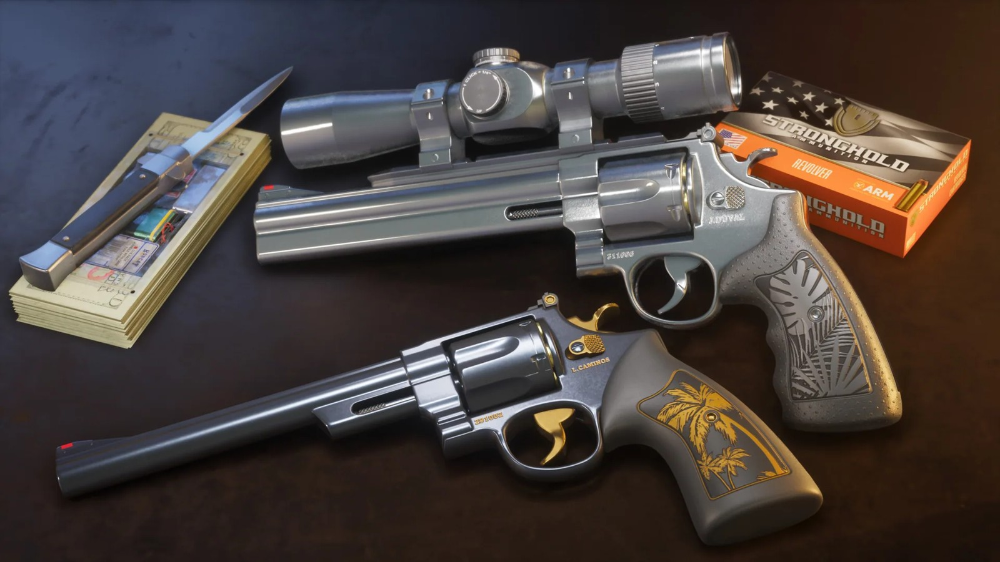

ACCUEIL / Armes
Sous-page · sourcée au 18 novembre 2026Armes & arsenal
Ce que Rockstar montre, ce que la presse rapporte, et ce qu’il vaut mieux ignorer.
Un arsenal plus contraintA more constrained arsenal
Les premières analyses de presse décrivent un système d’inventaire limité : le joueur ne transporte pas tout sur lui, et le reste se range dans le coffre d’un véhicule ou dans un casier. Ce point n’est pas détaillé dans nos sources officielles consultées.
Presse Vérifiez le nombre d’armes transportables et les règles de stockage dans les premières heures de jeu.
Ce que Rockstar montreWhat Rockstar shows
| Arme | Type | Détail | Niveau |
|---|---|---|---|
| Fusil (rifle) | Fusil | Deux personnes portent des fusils dans les bois du Mount Kalaga, une troisième est sur un airboat dans les Grassrivers. Rockstar ne précise pas le modèle. | Officiel |
| Girardi ES9 | Pistolet | Modèle nommé dans du matériel officiel, selon une compilation (mapdex.io). | Presse |
| Klose K17 | Pistolet | Modèle nommé dans du matériel officiel, selon mapdex.io. | Presse |
| Hawk & Little Morgan | Revolver | Modèle nommé dans du matériel officiel, selon mapdex.io. | Presse |
Les compilations donnent des chiffres très différents : sept armes « confirmées » selon mapdex.io (29 juillet 2026), plus de trente selon d’autres sites. Ces écarts viennent de la méthode : images, captures, et parfois fuites. Nous ne listons ici que ce qui est attribué à du matériel publié par Rockstar.
Images de référenceReference images
Trois armes nommées ont une image de référence vérifiable. Le fusil de Mount Kalaga n’est pas illustré : aucune image du modèle n’a été trouvée sur les sources vérifiées. Ce sont des images de référence à vérifier, pas des captures certifiées.

Girardi ES9
Pistolet tenu par Jason, près d’une moto Principe Alvino V1. Le nom est une identification de la base GTADB, non une annonce de Rockstar.
Source : Communauté : gtadb.net

Klose K17
Capture officielle de la variante Ultimate Edition, selon la base GTA Wiki. La marque est présentée comme inspirée du Glock.
Source : Wiki : gta.wiki (capture officielle)

Hawk & Little Morgan
Revolvers présentés comme un bonus de l’édition Ultimate. Capture présentée comme officielle par un site de presse.
Source : Presse : gta.tech4gamers.com
Fusil de Mount Kalaga (Only in Leonida) : aucune image du modèle n’a été trouvée sur les sources vérifiées. Rockstar ne précise pas le modèle. Nous n’avons pas généré d’image à la place, pour ne pas représenter un élément non confirmé.
Ce qu’il faut ignorerWhat to ignore
Listes à 16, 30 ou 49 armes
Ces totaux combinent captures, rumeurs et fuites de 2022. Un article ayant parlé de « 16 types confirmés par Rockstar » a été relayé comme une confirmation, alors que Rockstar n’a publié aucun total.
Modèles devinés
Des noms comme l’AK-47, le RPG ou le « Carbine » apparaissent sur des sites de guides, sans source officielle directe.
Viser et survivreAiming and surviving
Selon des critiques publiées le 18 novembre 2026, le tir est en troisième personne, sans verrouillage agressif. Le Focus permet de ralentir l’action pour viser plus précisément. Les tirs sur les jambes ou les bras peuvent mettre un ennemi hors combat, sans le tuer.
Presse Source : VGC et FinalWeapon, 18 novembre 2026. Ces comportements sont à vérifier en jeu.